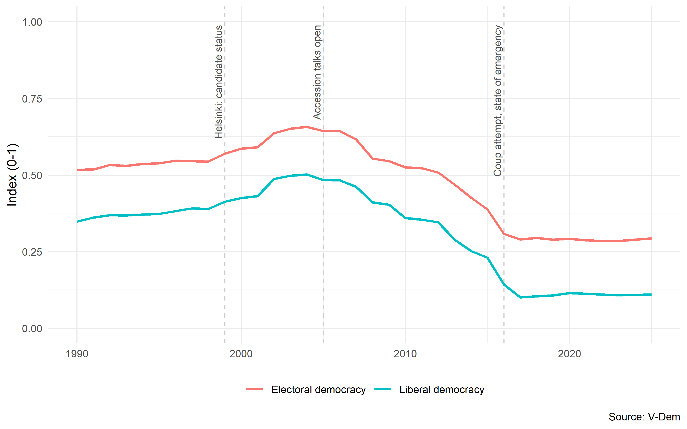
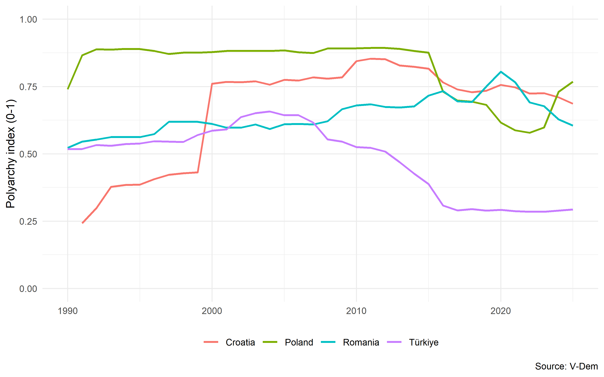
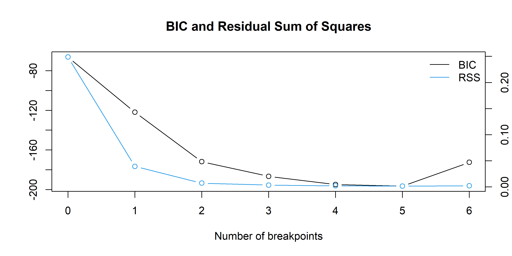

EU accession and democratic change in Turkey, 1990-2025
Author
Ertuğ Alagöz
Published
September 17, 2026
Introduction
Few cases have carried as much weight in the literature on European Union conditionality as Turkey, and few have been read in as many contradictory ways. Between 1999 and 2004 Turkey abolished the death penalty, dismantled the State Security Courts, curtailed the political role of the military and passed nine harmonisation packages alongside two substantial constitutional revisions. Within a decade of that reform wave the same country had become a standard reference point in the literature on democratic backsliding. The obvious question is whether the accession process drove the reforms, and if it did, when and why it stopped doing so.
This note approaches that question descriptively, using the Varieties of Democracy indices to trace Turkey’s trajectory from 1990 to 2025 and to set it against the other candidate countries of the same period. It does three things. It shows how far the electoral and liberal components of democracy came apart during the decline. It estimates the rate of change in the reform and reversal periods. And rather than asserting where the turning point lies, it estimates the structural breaks in the series and reports what the estimation returns, including the part that does not fit.
The central finding is that the reform peak does not coincide with the opening of accession negotiations but precedes it. Turkey’s electoral democracy score reaches its maximum in 2004, the year the European Council decided that negotiations would open, and falls from the moment negotiations actually began in October 2005. When the break is estimated rather than imposed, a single-break model places the turn in 2007, immediately after the Council suspended eight negotiating chapters in December 2006. What sustained reform, on this reading, was not a seat at the table but the continued credibility of the destination.
The comparative evidence is consistent with that reading, but it supports far less than comparisons of this kind are usually made to bear. Most of the candidate countries that acceded owe their democratic levels to the collapse of communism rather than to anything the Union did afterwards, which disqualifies them as evidence one way or the other. One case survives that objection, and the argument below rests on it.
Data and method
The analysis uses version 16 of the Varieties of Democracy dataset, which derives country-year estimates from the coded judgements of multiple country experts and aggregates them into a set of high-level indices through a Bayesian measurement model that adjusts for differences in coder reliability and threshold placement (Coppedge et al. 2011, 2026; Pemstein et al. 2026). Two of those indices are used here. The electoral democracy index operationalises Dahl’s conception of polyarchy, combining the freedom and fairness of elections with freedom of expression, freedom of association and the breadth of the franchise (Dahl 1971). The liberal democracy index incorporates that electoral component but adds constraints on the executive, the rule of law and the protection of individual liberties. Both run from 0 to 1.
Using the two together is deliberate. The argument developed below turns on the gap between them, since the components of democracy that EU conditionality pressed hardest, judicial independence and fundamental rights, are the ones the liberal index captures and the electoral index does not. Chapters 23 and 24 of the acquis, which cover exactly this ground, were never opened in Turkey’s negotiations.
Two estimation strategies follow. First, ordinary least squares fits a linear trend separately to the reform and reversal periods, giving an average annual rate of change in each. Second, the dating procedure developed by Bai and Perron and implemented in the strucchange package estimates the number and location of structural breaks in the series without being told where to look (Bai and Perron 1998; Zeileis et al. 2003).
Case selection requires more comment than it usually receives, and is treated in the comparative section rather than settled here.
Show code
# Filtering on ISO country codes rather than country names: accented characters# are fragile across operating systems and file encodings, country codes are not.turkey <- vdem |>filter(country_text_id =="TUR", year >=1990) |>select(year,polyarchy = v2x_polyarchy,libdem = v2x_libdem) |>arrange(year)turkey_long <- turkey |>pivot_longer(c(polyarchy, libdem),names_to ="index", values_to ="value") |>mutate(index =recode(index,polyarchy ="Electoral democracy",libdem ="Liberal democracy"))comparison <- vdem |>filter(country_text_id %in%c("TUR", "POL", "ROU", "HRV"), year >=1990) |>select(country = country_name, year, polyarchy = v2x_polyarchy) |>arrange(country, year)
The Turkish trajectory
The shape of Figure 1 is easy to summarise and harder to explain. The electoral democracy index sits close to 0.52 through the early 1990s, begins climbing after the Helsinki European Council granted Turkey candidate status in December 1999, and peaks at 0.66 in 2004. It then falls without interruption for a decade, reaching 0.29 by 2017 and flattening there. The liberal democracy index follows the same path at a lower level, rising from 0.35 to 0.51 and falling to 0.11.
Stated in absolute terms the two declines look similar, and the gap between the series stays within a narrow band throughout. In proportional terms they are not similar at all. Measured from their common 2004 peak, the electoral index loses 56 per cent of its value and the liberal index loses 80 per cent. What eroded fastest was not the holding of elections, which continued at high turnout and with genuine if increasingly unequal competition, but the constraints surrounding them: judicial independence, administrative legality, and the civil liberties that make electoral competition meaningful in the first place. This is the configuration Levitsky and Way describe as competitive authoritarianism, and the diagnosis has been applied to the Turkish case directly (Levitsky and Way 2010; Esen and Gumuscu 2016).
The pattern bears on the conditionality argument in a specific way. If the accession process exerted its strongest pull on judicial reform and fundamental rights, and if those are the areas that subsequently collapsed furthest, then whatever the process achieved in that domain proved the least durable. The reforms that survived were those with domestic constituencies behind them; those that depended on external pressure did not outlive the pressure. Turkish scholarship on de-Europeanisation has made a parallel argument from institutional evidence (Saatçioğlu 2016; Aydın-Düzgit and Kaliber 2016).
Show code
ggplot(turkey_long, aes(x = year, y = value, colour = index)) +geom_vline(xintercept =c(1999, 2005, 2016),linetype ="dashed", colour ="grey80") +geom_line(linewidth =1) +annotate("text", x =c(1999, 2005, 2016), y =0.99,label =c("Helsinki: candidate status","Accession talks open","Coup attempt, state of emergency"),angle =90, hjust =1, vjust =-0.4,size =3, colour ="grey30") +scale_y_continuous(limits =c(0, 1)) +labs(x =NULL, y ="Index (0-1)", colour =NULL,caption ="Source: V-Dem") +theme(legend.position ="bottom")

Figure 1: Electoral and liberal democracy in Turkey, 1990-2025. Dashed lines mark the Helsinki European Council (1999), the opening of accession negotiations (2005), and the coup attempt and subsequent state of emergency (2016).
Comparative context
A single country’s trajectory invites the objection that it reflects domestic politics and nothing else. The usual remedy is to place it beside candidates that completed accession. Figure 2 does so for Poland, Romania and Croatia, but the three cases are not equivalent, and treating them as a set would conceal the problem rather than address it.
The problem is 1989. Poland’s electoral democracy index stands near 0.74 in 1990 and reaches 0.89 by 1992, where it then remains for more than two decades. That level was established by the collapse of communism and the transition that followed it, years before candidate status and a full decade before accession. Nothing the Union did in the 1990s or 2000s produced it, and no comparison of post-accession levels can therefore be read as evidence of a conditionality effect. The same objection applies, with qualifications noted below, across the Central European cases generally. A comparison that lines up EU members at high values and Turkey at a low one is largely recovering the geography of the Cold War.
Poland’s later history is still instructive, but only negatively. Between 2015 and 2022 the index fell from 0.88 to 0.58, a decline steeper in absolute terms than anything in the Turkish series over a comparable span. Membership plainly did not immunise it, which is consistent with Sedelmeier’s finding that post-accession leverage is weak and inconsistently applied (Sedelmeier 2014). The subsequent recovery to 0.77 after the 2023 parliamentary election is likewise a domestic electoral outcome; attributing it to European influence would be an overreach, since the mechanism that failed to prevent the decline cannot plausibly be credited with reversing it. Poland tells us what conditionality does not do, and nothing more.
Romania is an intermediate case and the 1989 objection fits it less cleanly. Its transition was partial and contested, and the index reflects that: it sits at 0.52 in 1990, effectively the same value as Turkey, and remains between roughly 0.55 and 0.61 throughout the 1990s. There is no transition jump of the Polish kind. The climb is slow and comes later, reaching 0.68 by 2011 and a maximum of 0.72 in 2015, which is to say across the accession decade rather than at the moment communism ended. That much is weakly consistent with a conditionality effect, but two things cut against reading it as one. The confounding is severe, since the same period contains NATO accession, generational change in the political elite and the delayed working-out of the 1989 settlement. And the gain did not hold: by 2025 Romania has fallen back to 0.61, close to where it stood before accession. Romania cannot settle the question either.
That leaves Croatia, and Croatia is where the comparison does its work. Yugoslavia was not a Warsaw Pact state; it had broken with the Soviet bloc in 1948 and pursued non-alignment thereafter, so the end of communism in Central Europe does not explain the Croatian trajectory. What Croatia faced in the 1990s was war and the authoritarian nationalism of the Tuđman government, and its index accordingly stands at 0.24 in 1991, the first year for which the dataset records an independent Croatia and under half of Turkey’s value at the same date. Democratisation begins in 2000, after Tuđman’s death and the opposition victory, not in 1989.
The parallel with Turkey from that point is unusually tight. Both countries opened accession negotiations on 3 October 2005, on the same day and at the same intergovernmental conference. From that shared moment the two series separate completely. Croatia stands at 0.78 in 2005 and climbs to 0.85 by 2011; Turkey stands at 0.64 and falls to 0.52 over the same six years. By 2025 Croatia is at 0.69 and Turkey at 0.29. Croatia has itself given back a good deal of its peak, which is worth stating plainly rather than glossing, but the two countries end the period more than forty index points apart having begun it with Croatia far below. Comparable formal status produced incomparable outcomes, which suggests that the opening of negotiations carried little independent force. What differed was whether accession remained a plausible destination. Croatia’s negotiations proceeded to closure within eight years. Turkey’s produced eight suspended chapters in December 2006, further blockages in 2009, and a formal acknowledgement of standstill in 2018.
This is a paired comparison and it should be presented as one. It does not establish that the accession process caused Croatian democratisation or Turkish decline. What it does establish is that the standard explanation for the post-communist cases, namely that these countries were already democratic before the Union arrived, cannot be extended to the one case where the accession process and the divergence coincide most closely in time.
Show code
ggplot(comparison, aes(x = year, y = polyarchy, colour = country)) +geom_line(linewidth =0.9) +scale_y_continuous(limits =c(0, 1)) +labs(x =NULL, y ="Polyarchy index (0-1)", colour =NULL,caption ="Source: V-Dem") +theme(legend.position ="bottom")

Figure 2: Electoral democracy in four EU candidate countries, 1990-2025. Poland acceded in 2004, Romania in 2007 and Croatia in 2013. Croatia and Turkey opened accession negotiations on the same day, 3 October 2005.
Estimating the turn
Table 1 fits a linear trend to each of the two periods. The period boundary is placed at the opening of negotiations in October 2005, a date chosen on theoretical rather than empirical grounds; the following section tests whether the data agree.
Between 1999 and 2004 the electoral democracy index rose by 0.019 points a year on average. Between 2005 and 2011 it fell by 0.024 points a year. The asymmetry is the point worth dwelling on: the reversal ran roughly a quarter faster than the advance that preceded it. Five years of reform were undone in four.
The goodness-of-fit statistics carry a second and less obvious message. An R-squared near 0.92 in both periods means a straight line describes each period almost completely, which in turn means neither the rise nor the fall was driven by a discrete shock. Both were steady, cumulative movements sustained across multiple parliamentary terms. That is consistent with what the comparative literature now emphasises about contemporary democratic decline: it proceeds through the incremental accumulation of legal and administrative changes rather than through a single rupture (Bermeo 2016). The absence of a visible discontinuity at 2016, which the figure shows clearly, makes the same point from the other direction. The coup attempt and the state of emergency accelerated a decline that was already eight years old.
Show code
rise <-lm(polyarchy ~I(year -1999),data =filter(turkey, year >=1999, year <=2004))fall <-lm(polyarchy ~I(year -2005),data =filter(turkey, year >=2005, year <=2011))modelsummary(list("1999-2004"= rise, "2005-2011"= fall),coef_rename =c("I(year - 1999)"="Year", "I(year - 2005)"="Year"),gof_map =c("nobs", "r.squared"),stars =FALSE,notes =paste("Standard errors in parentheses. Year is centred on the first year of each","period, so the intercept is the fitted value in that year. Significance","tests are omitted: with annual observations and serially correlated","residuals, conventional standard errors are understated." ),output ="markdown")
Table 1: Ordinary least squares estimates of the annual change in the electoral democracy index, by period.
1999-2004
2005-2011
(Intercept)
0.567
0.650
(0.008)
(0.012)
Year
0.019
-0.024
(0.002)
(0.003)
Num.Obs.
6
7
R2
0.938
0.916
Standard errors in parentheses. Year is centred on the first year of each period, so the intercept is the fitted value in that year. Significance tests are omitted: with annual observations and serially correlated residuals, conventional standard errors are understated.
Where does the break fall?
The previous section has an obvious weakness, and it is better to state it than to wait for a reader to find it. The period boundary was chosen after looking at the plotted series. Selecting a breakpoint from the data and then testing a model built around it inflates apparent fit, and the resulting estimates cannot be treated as evidence that the break belongs where it was placed. There are two defences. The weaker one is that October 2005 is a date supplied by the theory rather than by the series. The stronger one is to stop choosing and let the break be estimated.
The Bai-Perron procedure does that, scanning the series for the number and location of structural changes that best partition it. The results appear below, in full rather than selectively, since reporting only the solutions that agree with a prior periodisation would defeat the purpose of estimating them.
The three- and four-break solutions both locate a break at 2004, independently of anything imposed here, which supports the periodisation used above. The single-break solution does not. It selects 2007.
That result should be taken seriously rather than set aside, and it is not straightforwardly favourable to the periodisation used in the previous section. The year 2007 follows immediately on the December 2006 decision of the Council to suspend eight negotiating chapters over Turkey’s refusal to extend the Additional Protocol to Cyprus. If the sharpest single discontinuity in thirty-five years of data falls there rather than at the opening of negotiations, then the opening itself marks no detectable change in the series, and what registers instead is the moment the membership prospect became visibly conditional on a dispute Turkey was unwilling to settle. The external incentives model anticipates something of this kind, in that rule adoption responds to the size and probability of the reward rather than to procedural milestones (Schimmelfennig and Sedelmeier 2004). A reader unpersuaded by that reading is entitled to treat the 2007 result as evidence against a negotiation-opening account, and the data presented here do not rule that out.
One caution about the selection criterion itself. The Bayesian information criterion is minimised at five breaks, but those five fall at 1997, 2002, 2007, 2012 and 2017, at almost exactly five-year intervals. That regularity is an artefact rather than a finding. With a minimum segment length of five observations, the algorithm approximates a smooth curve with as many short linear segments as it is permitted, and the criterion rewards the improved fit. Figure 3 shows the criterion flattening after two breaks, which is to say that it does not meaningfully discriminate among the three-, four- and five-break solutions.
Show code
bp <-breakpoints(polyarchy ~ year, data = turkey, h =0.15)break_years <-function(object, n) { turkey$year[breakpoints(object, breaks = n)$breakpoints]}tibble(breaks =1:4,years =map_chr(1:4, \(n) paste(break_years(bp, n), collapse =", "))) |> knitr::kable(col.names =c("Number of breaks", "Estimated break years"))
Number of breaks
Estimated break years
1
2007
2
2003, 2015
3
1997, 2004, 2015
4
1997, 2004, 2010, 2015
Show code
plot(bp)

Figure 3: Bayesian information criterion and residual sum of squares by number of estimated breakpoints.
Limitations
None of the above identifies a causal effect. What is shown is a set of descriptive patterns and their timing, and timing alone cannot separate the influence of the accession process from the domestic political changes that ran alongside it. The most serious threat is selection: candidate status and negotiating dates were not assigned at random but reflected judgements about where reform was already under way, which means the Union’s independent contribution is likely to be overstated by any comparison of this kind.
The comparative design compounds that problem rather than solving it. Once Poland and Romania are set aside for the reasons given above, the comparison reduces to a single pair, Turkey and Croatia. Two cases cannot rule out the many differences between them that have nothing to do with accession, among them the scale of the countries, their religious and geopolitical position in European debate, and the fact that Croatia’s democratisation began from a post-war settlement in which external actors were already deeply involved.
The estimation carries its own constraints. The trend models rest on six and seven annual observations. Residuals in a series of this sort are serially correlated, so conventional standard errors are understated and no significance tests are reported. The structural break procedure assumes a piecewise linear data-generating process, which a smoothly curving series does not satisfy, and the artefact discussed above follows directly from that mismatch.
The measures themselves are estimates rather than observations. V-Dem aggregates expert codings and publishes uncertainty intervals that are not displayed here; incorporating them would widen every comparison drawn above, particularly the smaller year-on-year movements.
Conclusion
Turkey’s democratic reforms peaked at the moment the prospect of membership was most credible, not at the moment negotiations began, and they reversed faster than they had advanced. The liberal components of democracy, the ones EU conditionality addressed most directly, fell furthest and have not recovered.
The comparative case for reading that trajectory as a conditionality story is weaker than it is usually made to look. The post-communist candidates cannot carry it, because their democratic levels were set in 1989 rather than by anything the Union did afterwards. Croatia can, because it was not a Soviet bloc state, because its democratisation dates from 2000, and because it began accession negotiations on the same day as Turkey and ended them eight years later. On that single pair, the reasonable conclusion is narrow: the opening of negotiations changed nothing by itself, and what separated the two trajectories was whether the destination stayed credible.
The obvious next step is to move from index trajectories to the documentary record of conditionality itself. The Commission’s annual reports on Turkey run continuously from 1998 and offer a corpus in which the changing language of conditionality can be measured directly rather than inferred from outcomes.
Replication code and data for this analysis are available at github.com/ertugalagoz/turkey-eu-conditionality
References
Aydın-Düzgit, Senem, and Alper Kaliber. 2016. “Encounters with Europe in an Era of Domestic and International Turmoil: Is Turkey a de-Europeanising Candidate Country?”South European Society and Politics 21 (1): 1–14.
Bai, Jushan, and Pierre Perron. 1998. “Estimating and Testing Linear Models with Multiple Structural Changes.”Econometrica 66 (1): 47–78.
Coppedge, Michael, John Gerring, Carl Henrik Knutsen, et al. 2026. V-DemCountry-Year Dataset v16. Varieties of Democracy (V-Dem) Project. https://doi.org/10.23696/vdemds26.
Coppedge, Michael, John Gerring, Staffan I. Lindberg, et al. 2011. “Conceptualizing and Measuring Democracy: A New Approach.”Perspectives on Politics 9 (2): 247–67.
Dahl, Robert A. 1971. Polyarchy: Participation and Opposition. Yale University Press.
Esen, Berk, and Sebnem Gumuscu. 2016. “Rising Competitive Authoritarianism in Turkey.”Third World Quarterly 37 (9): 1581–606.
Levitsky, Steven, and Lucan A. Way. 2010. Competitive Authoritarianism: Hybrid Regimes After the Cold War. Cambridge University Press.
Pemstein, Daniel, Kyle L. Marquardt, Eitan Tzelgov, et al. 2026. The V-Dem Measurement Model: Latent Variable Analysis for Cross-National and Cross-Temporal Expert-Coded Data. V-Dem Working Paper No. 21. University of Gothenburg, Varieties of Democracy Institute.
Saatçioğlu, Beken. 2016. “De-Europeanisation in Turkey: The Case of the Rule of Law.”South European Society and Politics 21 (1): 133–46.
Schimmelfennig, Frank, and Ulrich Sedelmeier. 2004. “Governance by Conditionality: EU Rule Transfer to the Candidate Countries of Central and Eastern Europe.”Journal of European Public Policy 11 (4): 661–79.
Sedelmeier, Ulrich. 2014. “Anchoring Democracy from Above? The European Union and Democratic Backsliding in Hungary and Romania After Accession.”JCMS: Journal of Common Market Studies 52 (1): 105–21.
Zeileis, Achim, Christian Kleiber, Walter Krämer, and Kurt Hornik. 2003. “Testing and Dating of Structural Changes in Practice.”Computational Statistics and Data Analysis 44 (1–2): 109–23.